用法：A型题点选项即判；X型题先多选、再点【判卷】；答完自动展开解析。刷完本课再过一遍底部【本课速记卡】，效果最好。
一、结核概述与基本病理6 题
A型·单选Q1P1 · 结核概述
结核病最主要的传染源是
答案与解析
答案：A
传染源：肺结核患者（主要是空洞性肺结核）；主要经呼吸道飞沫传播。
📖 讲义定位：P1 · 结核概述
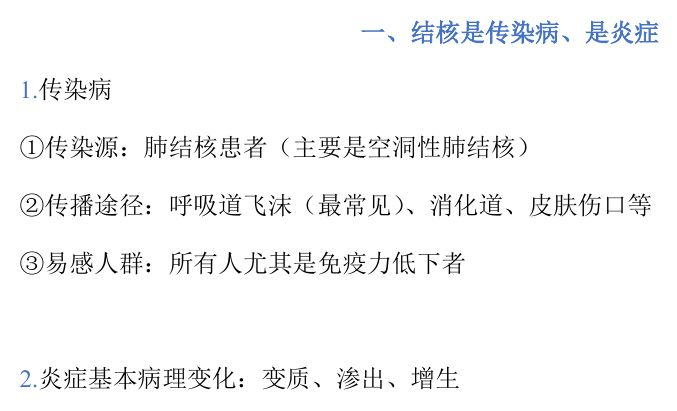
📷 讲义原图 · P1 · 结核概述
A型·单选Q2P1 · 结核杆菌
结核杆菌的致病性主要依靠
答案与解析
答案：D
结核杆菌不产生毒素，致病性/毒性依靠菌体细胞壁成分（脂类等）。
📖 讲义定位：P1 · 结核杆菌
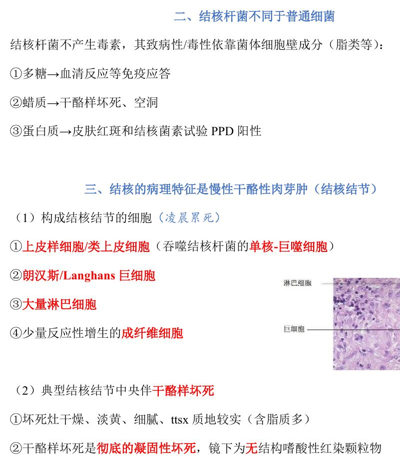
📷 讲义原图 · P1 · 结核杆菌
X型·多选Q3P1 · 结核杆菌
结核杆菌菌体成分（脂类等）的作用包括
答案与解析
答案：ACD
B 错：结核杆菌不产生外毒素。
📖 讲义定位：P1 · 结核杆菌
A型·单选Q4P1 · 结核结节
结核的病理特征性病变是
答案与解析
答案：B
结核的病理特征＝慢性干酪性肉芽肿（结核结节）；典型结节中央伴干酪样坏死。
📖 讲义定位：P1 · 结核结节
A型·单选Q5P1 · 结核结节
结核结节的上皮样细胞（类上皮细胞）起源于
答案与解析
答案：C
上皮样细胞＝吞噬结核杆菌的单核-巨噬细胞；结节组成还包括朗汉斯巨细胞、大量淋巴细胞、少量成纤维细胞（『凌晨累死』）。
📖 讲义定位：P1 · 结核结节
A型·单选Q6P1 · 结核结节
干酪样坏死的本质是
答案与解析
答案：C
干酪样坏死＝彻底的凝固性坏死；坏死灶干燥、淡黄、细腻、质地较实（含脂质多）。
📖 讲义定位：P1 · 结核结节
二、肺结核12 题
A型·单选Q7P2 · 原发性肺结核
原发性肺结核的概念是
答案与解析
答案：D
原发性肺结核：初次感染结核杆菌、无特异免疫力（之后在病程中出现）；好发儿童。
📖 讲义定位：P2 · 原发性肺结核
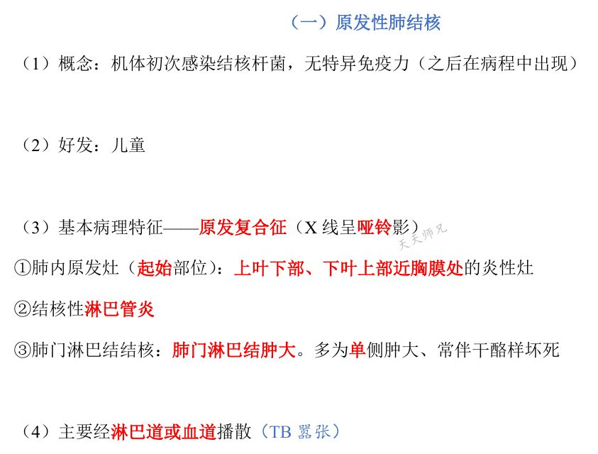
📷 讲义原图 · P2 · 原发性肺结核
A型·单选Q8P2 · 原发性肺结核
原发复合征的组成是
答案与解析
答案：B
原发复合征（X 线呈哑铃影）：①肺内原发灶（上叶下部、下叶上部近胸膜处）②结核性淋巴管炎 ③肺门淋巴结结核（多为单侧肿大、常伴干酪样坏死）。
📖 讲义定位：P2 · 原发性肺结核
A型·单选Q9P2 · 原发性肺结核
原发性肺结核的主要播散途径是
答案与解析
答案：A
原发性肺结核主要经淋巴道或血道播散（TB 嚣张）。
📖 讲义定位：P2 · 原发性肺结核
A型·单选Q10P3 · 继发性肺结核
继发性肺结核的好发部位是
答案与解析
答案：B
继发性肺结核好发上叶尖后段、下叶背段和后基底段（『勾肩搭背』）；常从右肺尖开始。
📖 讲义定位：P3 · 继发性肺结核
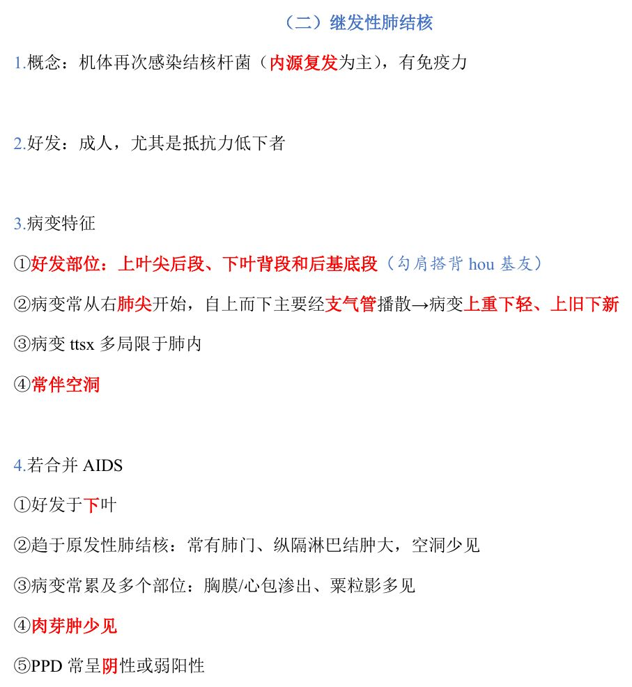
📷 讲义原图 · P3 · 继发性肺结核
A型·单选Q11P3 · 继发性肺结核
继发性肺结核的主要播散方式和病变分布特点是
答案与解析
答案：A
继发性肺结核：自上而下主要经支气管播散→上重下轻、上旧下新；多局限于肺内、常伴空洞。
📖 讲义定位：P3 · 继发性肺结核
A型·单选Q12P3 · 继发性肺结核类型
局灶型肺结核的特点是
答案与解析
答案：D
局灶型：非活动性；好发肺尖、境界清楚结节、以增生为主（菌少＋免疫力强→多无症状）。
📖 讲义定位：P3 · 继发性肺结核类型
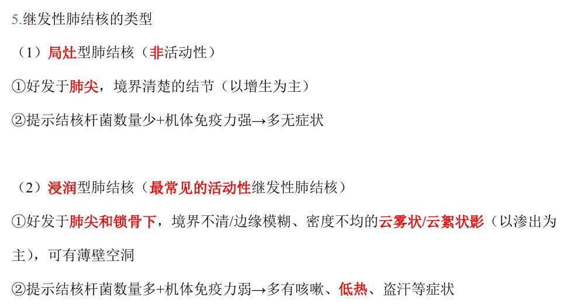
📷 讲义原图 · P3 · 继发性肺结核类型
A型·单选Q13P3 · 继发性肺结核类型
最常见的活动性继发性肺结核类型是
答案与解析
答案：C
浸润型：最常见的活动性继发性肺结核；好发肺尖和锁骨下、云雾状/云絮状影（以渗出为主）、可有薄壁空洞（菌多＋免疫力弱→咳嗽、低热、盗汗）。
📖 讲义定位：P3 · 继发性肺结核类型
A型·单选Q14P4 · 继发性肺结核类型
病情危重、可见虫蚀样空洞的肺结核类型是
答案与解析
答案：D
干酪性肺炎：病情危重；虫蚀样空洞、可有大叶性实变。
📖 讲义定位：P4 · 继发性肺结核类型
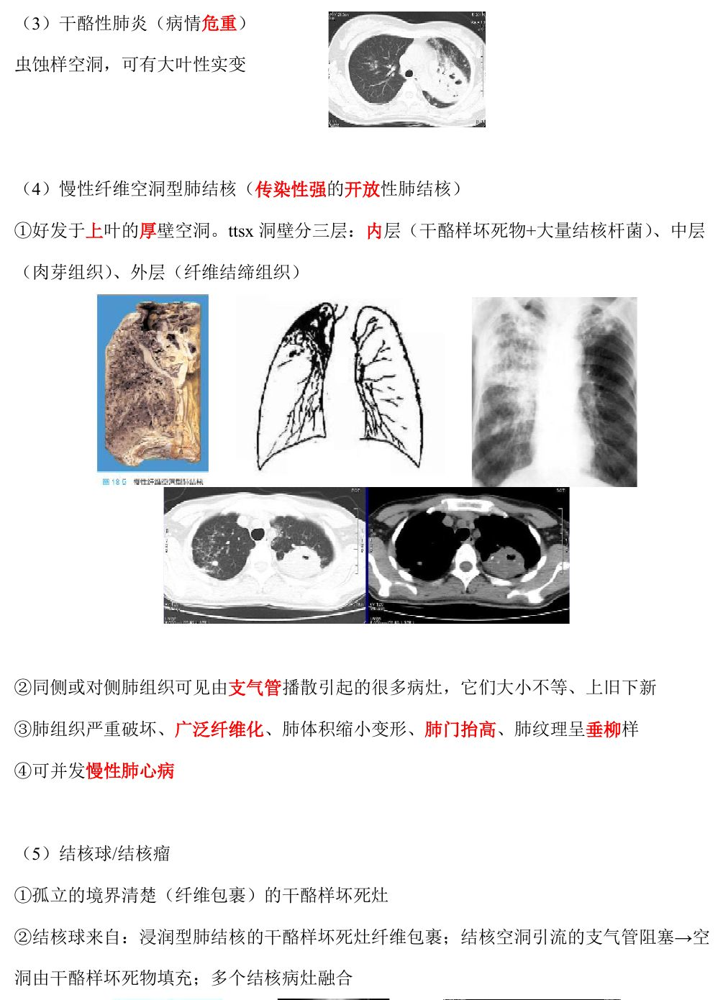
📷 讲义原图 · P4 · 继发性肺结核类型
A型·单选Q15P4 · 继发性肺结核类型
慢性纤维空洞型肺结核空洞壁的三层结构由内向外是
答案与解析
答案：C
厚壁空洞：内层＝干酪样坏死物＋大量结核杆菌、中层＝肉芽组织、外层＝纤维结缔组织；属传染性强的开放性肺结核，可并发慢性肺心病。
📖 讲义定位：P4 · 继发性肺结核类型
A型·单选Q16P4 · 继发性肺结核类型
结核球（结核瘤）的本质是
答案与解析
答案：A
结核球：孤立、境界清楚（纤维包裹）的干酪样坏死灶；来自浸润型病灶纤维包裹、空洞被干酪物填充或病灶融合。
📖 讲义定位：P4 · 继发性肺结核类型
A型·单选Q17P5 · 结核性胸膜炎
结核性胸膜炎最常见的形式是
答案与解析
答案：B
湿性多见：浆液纤维蛋白性渗出性炎（胸腔积液）；可致胸膜增厚粘连；干性为增生性。
📖 讲义定位：P5 · 结核性胸膜炎
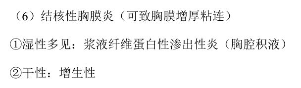
📷 讲义原图 · P5 · 结核性胸膜炎
X型·多选Q18P3 · 继发性肺结核
继发性肺结核的病理特点有
答案与解析
答案：BC
D、A 错：血道播散和肺门淋巴结肿大是原发性肺结核的特点；继发性以支气管播散为主、从肺尖开始。
📖 讲义定位：P3 · 继发性肺结核
三、血源播散与肺外结核8 题
A型·单选Q19P5 · 血源播散
急性全身粟粒性结核的发生机制是
答案与解析
答案：A
急性全身粟粒性结核：短时间内一次或反复多次大量侵入肺静脉分支→经左心至体循环→播散到全身各器官（肺、肝、脾、脑膜等）。
📖 讲义定位：P5 · 血源播散
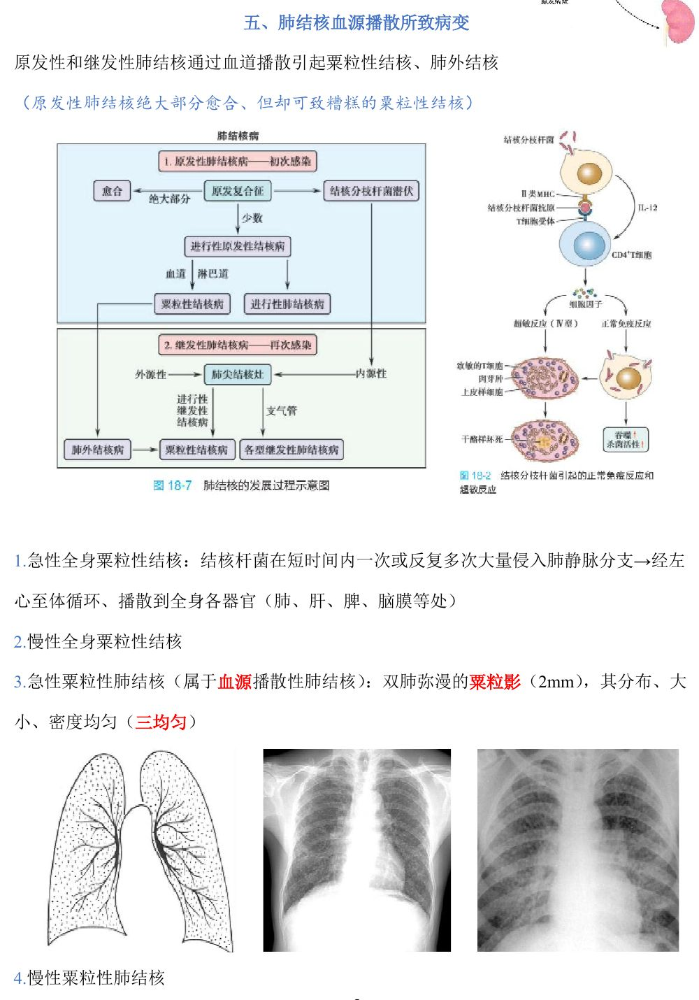
📷 讲义原图 · P5 · 血源播散
A型·单选Q20P5 · 血源播散
急性粟粒性肺结核的典型表现是
答案与解析
答案：B
急性粟粒性肺结核（血源播散性肺结核）：双肺弥漫粟粒影（2mm）、分布/大小/密度均匀（三均匀）。
📖 讲义定位：P5 · 血源播散
A型·单选Q21P6 · 肠结核
肠结核的感染途径和好发部位是
答案与解析
答案：D
肠结核多继发于空洞性肺结核（经口感染）；好发回盲部；溃疡型多见：环形溃疡（长轴与肠长轴垂直）→易致肠梗阻。
📖 讲义定位：P6 · 肠结核
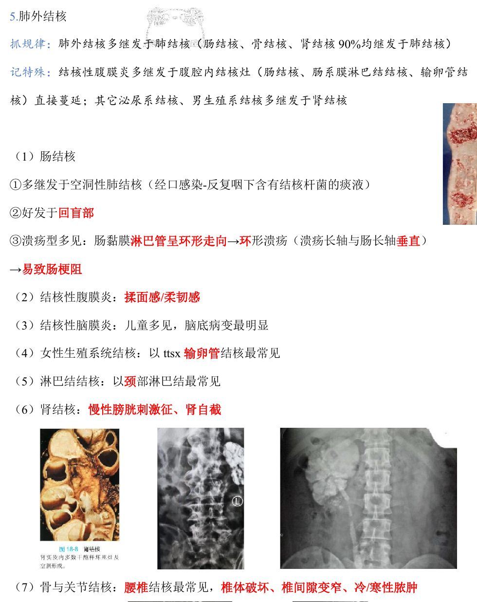
📷 讲义原图 · P6 · 肠结核
A型·单选Q22P6 · 肠结核
肠结核溃疡的形态特征取决于
答案与解析
答案：C
肠黏膜淋巴管呈环形走向→环形溃疡（长轴与肠长轴垂直）。对比：肠伤寒溃疡长轴与肠长轴平行（与淋巴小结形态一致）。
📖 讲义定位：P6 · 肠结核
A型·单选Q23P6 · 肺外结核
女性生殖系统结核中最常见的是
答案与解析
答案：C
女性生殖系统结核以输卵管结核最常见。
📖 讲义定位：P6 · 肺外结核
A型·单选Q24P6 · 肺外结核
淋巴结结核中最常见的是
答案与解析
答案：A
淋巴结结核以颈部淋巴结最常见。
📖 讲义定位：P6 · 肺外结核
A型·单选Q25P6 · 肺外结核
骨与关节结核中，最常见且可形成『冷脓肿』的是
答案与解析
答案：D
骨与关节结核：腰椎结核最常见，椎体破坏、椎间隙变窄、冷/寒性脓肿。
📖 讲义定位：P6 · 肺外结核
A型·单选Q26P6 · 肺外结核
结核性腹膜炎的临床特点是（其感染途径多为）
答案与解析
答案：B
结核性腹膜炎：揉面感/柔韧感；多继发于腹腔内结核灶（肠结核、肠系膜淋巴结结核、输卵管结核）直接蔓延。
📖 讲义定位：P6 · 肺外结核
本课速记卡
结核基本病理
- 传染病（传染源：空洞性肺结核；呼吸道飞沫传播为主）＋炎症（变质、渗出、增生）
- 致病靠菌壁成分：多糖→免疫应答；蜡质→干酪样坏死、空洞；蛋白质→PPD 阳性（不产生毒素）
- 特征：慢性干酪性肉芽肿（结核结节）＝上皮样细胞（←巨噬细胞）＋朗汉斯巨细胞＋大量淋巴细胞＋少量成纤维细胞；中央干酪样坏死（彻底的凝固性坏死）
原发性 VS 继发性肺结核
| 项目 | 原发性 | 继发性 |
|---|
| 感染/好发 | 初次；儿童 | 再次（内源复发为主）；成人 |
| 好发部位 | 上叶下部、下叶上部近胸膜 | 上叶尖后段、下叶背段 |
| 播散 | 淋巴道、血道 | 支气管（上重下轻、上旧下新） |
| 特征 | 原发复合征（哑铃影） | 多局限肺内、常伴空洞 |
继发性肺结核 6 型
- 局灶型：非活动性、肺尖界清结节（增生为主）
- 浸润型：最常见活动性（渗出为主、云雾状影）
- 干酪性肺炎：危重、虫蚀样空洞
- 慢性纤维空洞型：厚壁空洞三层、开放传染、可致肺心病
- 结核球：纤维包裹的孤立干酪灶
- 结核性胸膜炎：湿性多见（浆液纤维蛋白性）
血源播散与肺外结核
- 急性全身粟粒性结核：肺静脉→左心→体循环；急性粟粒性肺结核『三均匀』（2mm）
- 肠结核：继发空洞性肺结核、回盲部、环形溃疡（⊥肠长轴）→易梗阻
- 脑膜（儿童、脑底）、输卵管（女性生殖最多）、颈部淋巴结（最多）、腰椎（冷脓肿）
- 规律：肺外结核多继发肺结核；特例：结核性腹膜炎多继腹腔内结核直接蔓延；泌尿/男生殖系多继肾结核
📚 网站题库（导入）5 组 · 13 题
说明：本部分为外部题库导入（来源：「西综题库」网站 · 病理学），题干、选项与答案保留原样；标注「教师补充」的答案未经讲义逐项复核。做题方式：点字母选择（多选后点【判卷】；答案可点开「答案与出处」查看）。
结核杆菌细胞壁成分B型题
A 干酪样坏死、空洞
B 血清反应等免疫应答
C 皮肤红斑和结核菌素试验PPD阳性
网站题W1第20讲 · 第1页
多糖
答案与出处
答案：B
📖 第20讲 · 第1页
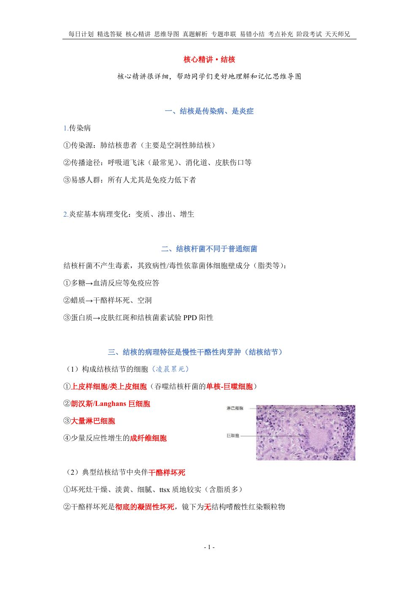
📷 讲义原图 · 第20讲 · 第1页
网站题W2第20讲 · 第1页
蜡质
答案与出处
网站题W3第20讲 · 第1页
蛋白质
答案与出处
原发性与继发性肺结核B型题
A 机体初次感染结核杆菌，无特异免疫力
B 病变常从右肺尖开始，自上而下主要经支气管播散，病变上重下轻、上旧下新
C 好发于儿童
D 常伴空洞
E 基本病理特征为原发复合征（X线呈哑铃影）
F 若合并AIDS，好发于下叶
G 机体再次感染结核杆菌（内源复发为主），有免疫力
H 肺内原发灶位于上叶下部、下叶上部近胸膜处
I 病变多局限于肺内
J 若合并AIDS，趋于原发性肺结核：肺门、纵隔淋巴结肿大，空洞少见
K 有结核性淋巴管炎
L 好发于成人，尤其抵抗力低下者
M 若合并AIDS，PPD常呈阴性或弱阳性
N 肺门淋巴结结核：多为单侧肿大，常伴干酪样坏死
O 好发于上叶尖后段、下叶背段和后基底段
P 主要经淋巴道或血道播散
Q 若合并AIDS，肉芽肿少见
网站题W4第20讲 · 第2页
原发性肺结核
答案与出处
答案：ACEHKNP
📖 第20讲 · 第2页
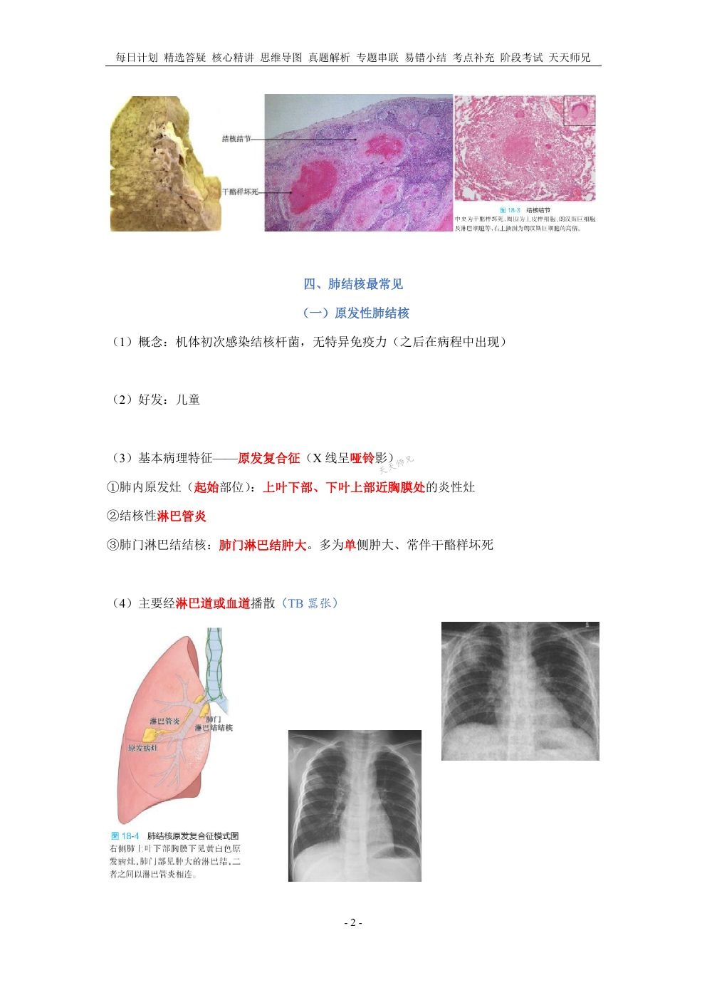
📷 讲义原图 · 第20讲 · 第2页
网站题W5第20讲 · 第3页
继发性肺结核
答案与出处
答案：BDFGIJLMOQ
📖 第20讲 · 第3页
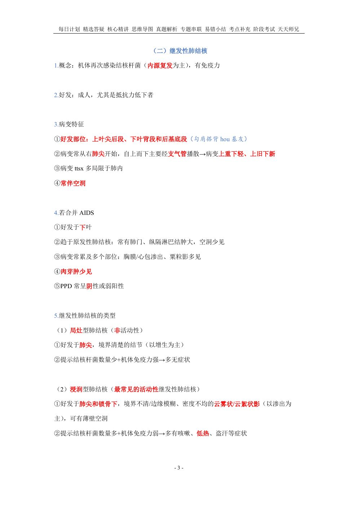
📷 讲义原图 · 第20讲 · 第3页
继发性肺结核的类型B型题
A 非活动性
B 病情危重
C 好发于肺尖，境界清楚的结节，增生为主
D 肺组织严重破坏、广泛纤维化、肺体积缩小变形、肺门抬高、肺纹理呈垂柳样
E 最常见的活动性继发性肺结核
F 孤立的境界清楚（纤维包裹）的干酪样坏死灶
G 湿性多见：浆液纤维蛋白性渗出性炎；干性：增生性
H 好发于肺尖和锁骨下，境界不清/边缘模糊、密度不均，呈云雾状/云絮状影（以渗出为主）
I 好发于上叶的厚壁空洞
J 可有薄壁空洞
K 虫蚀样空洞，可有大叶性实变
L 传染性强的开放性肺结核
M 多有咳嗽、低热、盗汗等症状
N 可并发慢性肺心病
O 可致胸膜增厚粘连
P 同侧或对侧肺组织可见由支气管播散引起的很多病灶，它们大小不等、上旧下新
网站题W6第20讲 · 第3页
局灶型肺结核
答案与出处
网站题W7第20讲 · 第3页
浸润型肺结核
答案与出处
网站题W8第20讲 · 第4页
干酪样肺炎
答案与出处
答案：BK
📖 第20讲 · 第4页
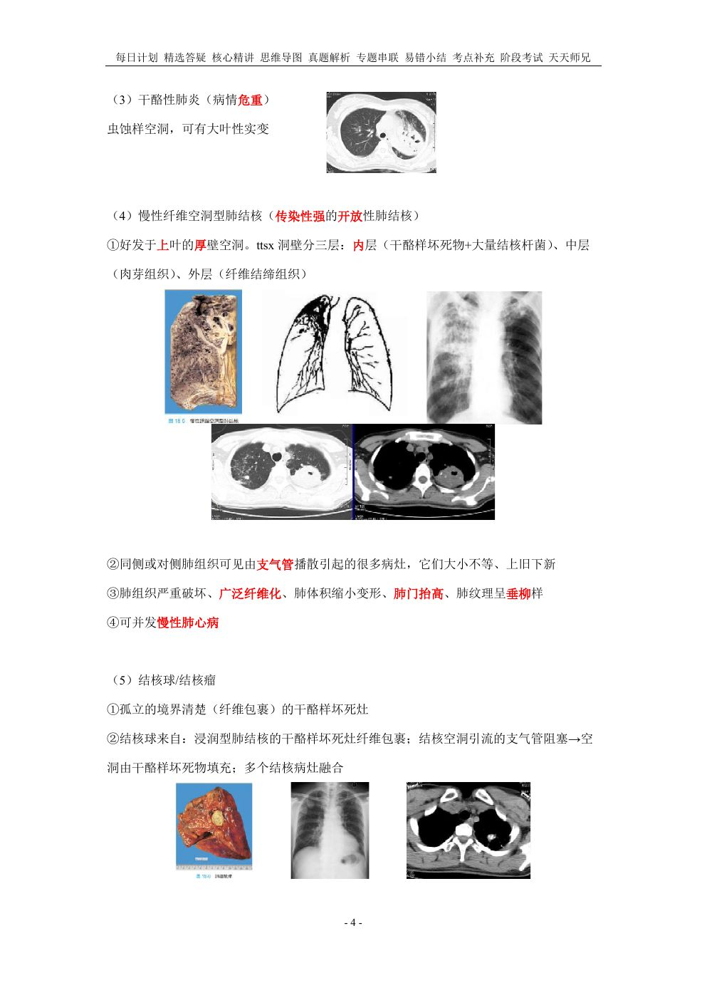
📷 讲义原图 · 第20讲 · 第4页
网站题W9第20讲 · 第4页
慢性纤维空洞型肺结核
答案与出处
网站题W10第20讲 · 第4页
结核球/结核瘤
答案与出处
网站题W11第20讲 · 第5页
结核性胸膜炎
答案与出处
答案：GO
📖 第20讲 · 第5页
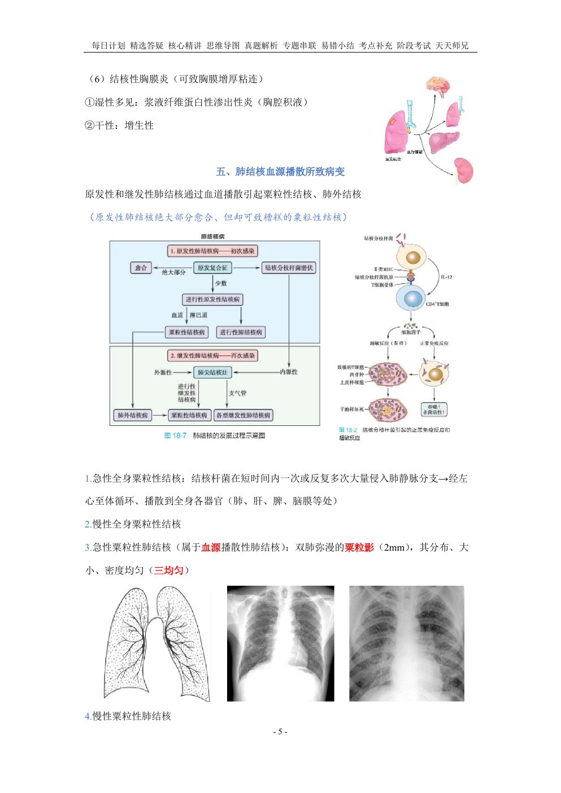
📷 讲义原图 · 第20讲 · 第5页
在结核病的免疫反应中,起主要作用的细胞是单项选择教师补充
A CD8 T细胞
B CD4 T细胞
C B淋巴细胞
D 巨噬细胞
网站题W12第20讲 · 第8页
在结核病的免疫反应中,起主要作用的细胞是(单选)
答案与出处
答案：B
📖 第20讲 · 第8页
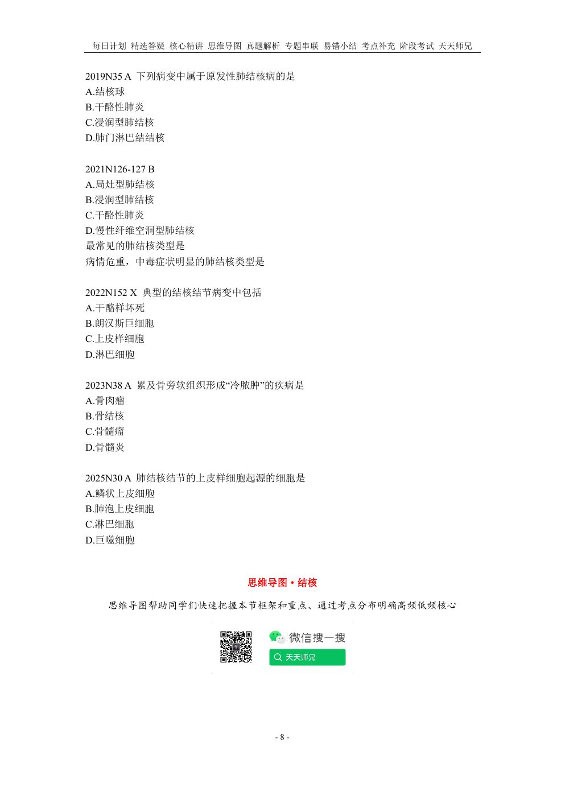
📷 讲义原图 · 第20讲 · 第8页
淋巴结结核病最常见于单项选择教师补充
A 支气管淋巴结
B 肠系膜淋巴结
C 颈部淋巴结
D 锁骨上淋巴结
网站题W13第20讲 · 第6页
淋巴结结核病最常见于(单选)
答案与出处
答案：C
📖 第20讲 · 第6页
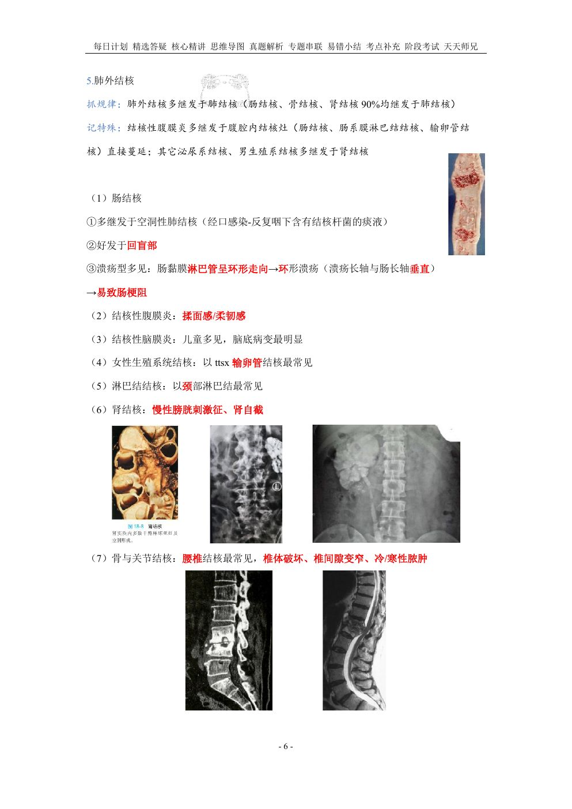
📷 讲义原图 · 第20讲 · 第6页